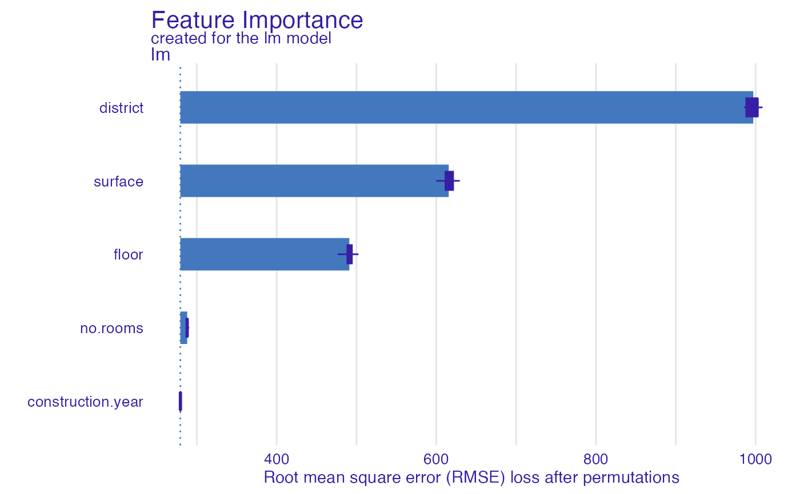

Natural language description of feature importance explainer
Source:R/describe_aggregated_profiles.R, R/describe_ceteris_paribus.R, R/describe_feature_importance.R
describe.RdGeneric function describe generates a natural language
description of ceteris_paribus(), aggregated_profiles() and
feature_importance() explanations what enchaces their interpretability.
# S3 method for partial_dependence_explainer describe( x, nonsignificance_treshold = 0.15, ..., display_values = FALSE, display_numbers = FALSE, variables = NULL, label = "prediction" ) describe(x, ...) # S3 method for ceteris_paribus_explainer describe( x, nonsignificance_treshold = 0.15, ..., display_values = FALSE, display_numbers = FALSE, variables = NULL, label = "prediction" ) # S3 method for feature_importance_explainer describe(x, nonsignificance_treshold = 0.15, ...)
Arguments
| x | a ceteris paribus explanation produced with function |
|---|---|
| nonsignificance_treshold | a parameter specifying a treshold for variable importance |
| ... | other arguments |
| display_values | allows for displaying variable values |
| display_numbers | allows for displaying numerical values |
| variables | a character of a single variable name to be described |
| label | label for model's prediction |
Details
Function describe.ceteris_paribus() generates a natural language description of
ceteris paribus profile. The description summarizes variable values, that would change
model's prediction at most. If a ceteris paribus profile for multiple variables is passed,
variables must specify a single variable to be described. Works only for a ceteris paribus profile
for one observation. In current version only categorical values are discribed. For display_numbers = TRUE
three most important variable values are displayed, while display_numbers = FALSE displays
all the important variables, however without further details.
Function describe.ceteris_paribus() generates a natural language description of
ceteris paribus profile. The description summarizes variable values, that would change
model's prediction at most. If a ceteris paribus profile for multiple variables is passed,
variables must specify a single variable to be described. Works only for a ceteris paribus profile
for one observation. For display_numbers = TRUE
three most important variable values are displayed, while display_numbers = FALSE displays
all the important variables, however without further details.
Function describe.feature_importance_explainer() generates a natural language
description of feature importance explanation. It prints the number of important variables, that
have significant dropout difference from the full model, depending on nonsignificance_treshold.
The description prints the three most important variables for the model's prediction.
The current design of DALEX explainer does not allow for displaying variables values.
References
Explanatory Model Analysis. Explore, Explain, and Examine Predictive Models. https://pbiecek.github.io/ema/
Examples
library("DALEX") library("ingredients") library("ranger") # \donttest{ model_titanic_rf <- ranger(survived ~., data = titanic_imputed, probability = TRUE) explain_titanic_rf <- explain(model_titanic_rf, data = titanic_imputed[,-8], y = titanic_imputed[,8], label = "ranger forest", verbose = FALSE) selected_passangers <- select_sample(titanic_imputed, n = 10) cp_rf <- ceteris_paribus(explain_titanic_rf, selected_passangers) pdp <- aggregate_profiles(cp_rf, type = "partial", variable_type = "categorical") describe(pdp, variables = "gender")#> Ranger forest's mean prediction is equal to 0.314. #> #> Model's prediction would . #> The largest change would be marked if gender variable would change to NA. #> #> Other variables are with less importance and they do not change prediction by more than 0.06%.# } library("DALEX") library("ingredients") library("ranger") # \donttest{ model_titanic_rf <- ranger(survived ~., data = titanic_imputed, probability = TRUE) explain_titanic_rf <- explain(model_titanic_rf, data = titanic_imputed[,-8], y = titanic_imputed[,8], label = "ranger forest", verbose = FALSE) selected_passanger <- select_sample(titanic_imputed, n = 1, seed = 123) cp_rf <- ceteris_paribus(explain_titanic_rf, selected_passanger) plot(cp_rf, variable_type = "categorical")describe(cp_rf, variables = "class", label = "the predicted probability")#> For the selected instance, the predicted probability estimated by Ranger forest is equal to 0.964. #> #> Model's prediction would decrease substantially if the value of class variable would change to "3rd", "deck crew", "engineering crew", "victualling crew", "restaurant staff". #> The largest change would be marked if class variable would change to "3rd". #> #> Other variables are with less importance and they do not change the predicted probability by more than 0.09%.# } library("DALEX") library("ingredients") lm_model <- lm(m2.price~., data = apartments) explainer_lm <- explain(lm_model, data = apartments[,-1], y = apartments[,1])#> Preparation of a new explainer is initiated #> -> model label : lm ( default ) #> -> data : 1000 rows 5 cols #> -> target variable : 1000 values #> -> predict function : yhat.lm will be used ( default ) #> -> predicted values : No value for predict function target column. ( default ) #> -> model_info : package stats , ver. 4.0.4 , task regression ( default ) #> -> predicted values : numerical, min = 1781.848 , mean = 3487.019 , max = 6176.032 #> -> residual function : difference between y and yhat ( default ) #> -> residuals : numerical, min = -247.4728 , mean = 2.093656e-14 , max = 469.0023 #> A new explainer has been created!describe(fi_lm)#> The number of important variables for lm's prediction is 3 out of 5. #> Variables district, surface, floor have the highest importantance.